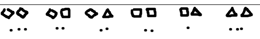

لكل شكل یدخل المنزل، یمكن أن ترسم نقطة أسفل الشكل المطابق.
على سبیل المثال، اثناء اللعبة، یمكنك الحصول على الرسم أدناه.

یشیر هذا الرسم إلى أننا شاهدنا معینا واحدا، و ٣ مربعات، ومثلثا واحدا، و ٣ أشكال سداسیة ونجمتین.
لكل شكل یدخل المنزل، یمكن أن ترسم نقطة أسفل الشكل المطابق لكل شكل یدخل المنزل، یمكن للمرء أن یرسم نقطة أسفل الشكل المطابق. و لكل شكل یخرج من المنزل، یمكنك إخفاء النقطة بخط.
على سبیل المثال، اثناء اللعبة، یمكنك الحصول على الرسم أدناه.

یشیر هذا الرسم إلى أننا شاهدنا اثنین من شكل المعین یدخلان و یخرج واحدا منهم، ورأینا دخول ٤ مربعات و خروج اثنین
منهم ، ورأینا دخول أربع مثلثات و خروج ثلاثة منها، ورأینا أربعة أشكال سداسیة لم یخرج أي منها.
لملاحظة أزواج الأشكال التي تدخل المنزل، هناك عدة طرق ممكنة، بما في ذلك الطرق الثلاثة التالیة:
الطریقة الأولى: هي رسم جمیع الأزواج الممكنة قبل البدء. یستغرق الأمر بعض الوقت لأنك یجب أن ترسم ١٢ شكلا، ولكن بعد ذلك یصبح الأمر سهلا للغایة. فقط ستعمل على إضافة نقطة واحدة لكل زوج من الشكل الذي یدخل المنزل. هنا مثال لذلك:

الطریقة الثانیة: أكثر فاعلیة لأنها تتطلب فقط رسم ٣ أشكال. نبدأ برسم الأشكال الثلاثة الممكنة على الیسار. عندما یصل زوج من الأشكال، نبحث عن السطر المقابل للنموذج الأول، والعمود المقابل للنموذج الثاني، ونرسم نقطة. هنا مثال لذلك :

الطریقة الثالثة: لا تتطلب أي رسم مسبق. والفكرة هي استخدام الصفات. لكل زوج من الأشكال التي تدخل المنزل، ارسم خطا یربط بین النموذجین اللذین یشكلان الزوج. هنا مثال لذلك :

ومع ذلك، فإن هذا التمثیل یتطلب عنایة أكثر من الآخرین لیكون منظما جیدا خلال اللعبة، حتى یكون قادرا على الاكتشاف عندما یحتوي المنزل على ٣ أزواج متطابقة.